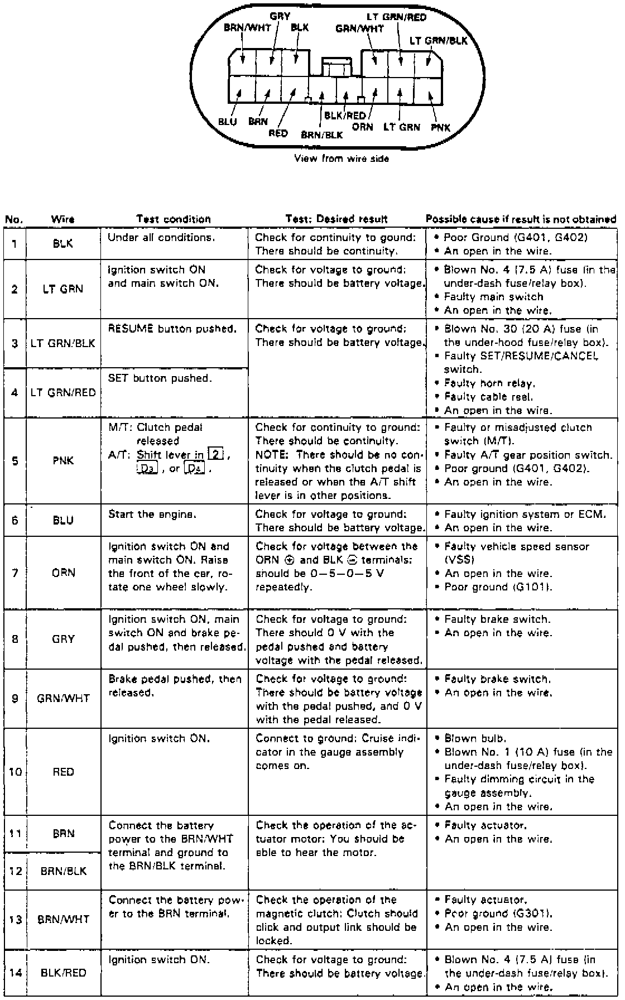

Cruise Control Module: Testing and Inspection
1. On models equipped with radio coded theft protection system, refer to Vehicle Damage Warnings for system disarming and arming procedures.2. Disconnect control unit connector.
Fig. 11 Control Unit Input Test:

3. Referring to Fig. 11. Recheck connections between connector and control unit, then reinstall if all tests are satisfactory.
4. On models equipped with radio coded theft protection system, refer to Vehicle Damage Warnings for system disarming and arming procedures.